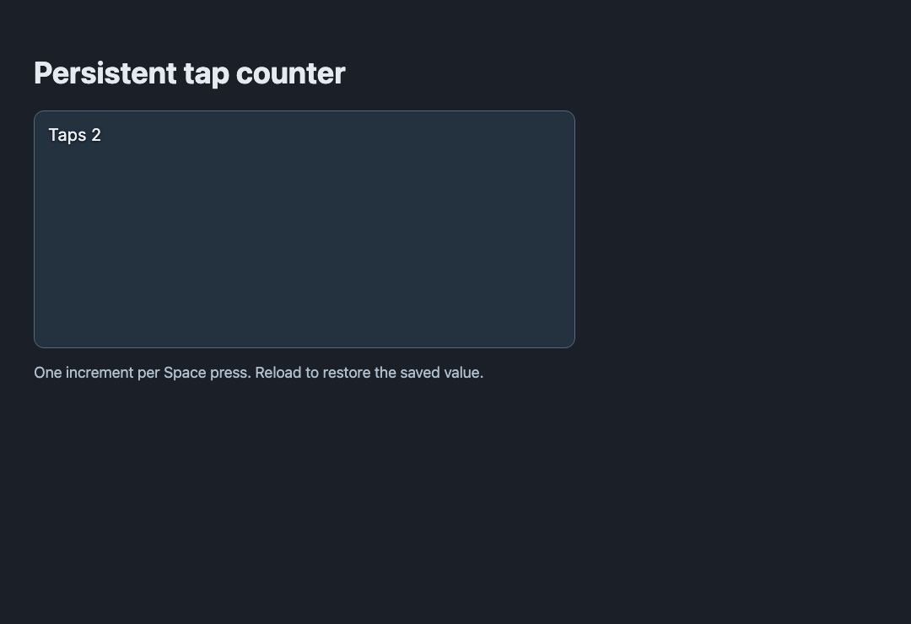

UI, audio and saves cheatsheet
Use this page for the player-facing parts of a game: a visible result, a sound and a value remembered next time. UI and audio services remain available from a MonoBehaviour; using them does not require switching to the lower-case lifecycle.
UI lookup#
| Task | Call from MonoBehaviour | Lifetime / contract |
|---|---|---|
| Create a label | this.ui.label('Score 0', { x: 16, y: 16 }) |
Returns a handle; keep it |
| Change a label | label.set('Score 1') |
Updates the existing handle |
| Create a button | this.ui.button('Play', callback, options) |
Callback handles the press |
| Show / hide a named screen | this.ui.show('pause') / this.ui.hide('pause') |
Does not itself pause gameplay |
| Remove one element | label.remove() |
Release UI you created when its owner ends |
| Load a designed screen | await this.ui.load('ui/menu.ui.json') |
Promise; wire actions after loading |
| Update a binding | screen.set('score', 12) |
Matches a binding used by the designed screen |
| Handle a designed action | screen.on('start', callback) |
Action name must match the UI Designer |
Open Window ▸ Editors ▸ UI Designer to create a designed screen. Name nodes and configure their actions, then save. In the file ui/menu.ui.json, layout and actions are data; a script loads that same path. See UI scenes reference for the file contract.
Complete example: a counter that remembers#
- In Assets, create a New MonoBehaviour script (Unity-style) named
TapCounter. Replace the file with the complete code below. - Select an entity in Hierarchy and attach it through Inspector ▸ + Add script. Save the scene.
- Press Play, focus the Game view and press Space. The label increments once per press. Stop and Play again: the value returns from the current save slot.
File: scripts/TapCounter.js (new file, the whole file)
import { MonoBehaviour, UnityInput as Input, KeyCode, PlayerPrefs } from 'nord';
export default class TapCounter extends MonoBehaviour {
Start() {
this.count = PlayerPrefs.GetInt('cheatsheet.tapCount', 0);
this.label = this.ui.label(`Taps ${this.count}`, { x: 16, y: 16 });
}
Update() {
if (!Input.GetKeyDown(KeyCode.Space)) return;
this.count += 1;
PlayerPrefs.SetInt('cheatsheet.tapCount', this.count);
this.label.set(`Taps ${this.count}`);
}
OnDestroy() {
this.label?.remove();
}
}In the file scenes/main.scene.json (or your open scene), the selected entity's scripts array includes this entry; preserve its other entries:
{ "path": "scripts/TapCounter.js", "attributes": {} }
This stores a small value per press to demonstrate persistence. Do not write large world snapshots every render frame. It needs no audio file, project input action or physics body.
Audio lookup#
| Task | Call | Check |
|---|---|---|
| Play a sound | this.audio.play('assets/audio/coin.wav', { volume: 0.8 }) |
File exists inside this project |
| Play music | this.audio.music('assets/audio/music.mp3', { fade: 1 }) |
Music player handles one current track |
| Stop music | this.audio.stopMusic({ fade: 0.5 }) |
Consider who owns the music between scenes |
| Set a bus level | this.audio.volume('music', 0.5) |
0..1; buses include master, music, sfx, ui |
| Mute a bus | this.audio.mute('sfx', true) |
Separate from changing its stored volume |
Browsers require user activation before audible playback. Test after a click or key press. AudioManager.instance requires an actual AudioManager subclass instance in the game; importing the class does not create a singleton.
Persistence lookup#
| Need | Call | Behavior |
|---|---|---|
| Number setting | PlayerPrefs.SetInt(key, number) / GetInt(key, fallback) |
Integer conversion |
| Decimal setting | PlayerPrefs.SetFloat(key, number) / GetFloat(key, fallback) |
Numeric value |
| Text setting | PlayerPrefs.SetString(key, text) / GetString(key, fallback) |
Text value |
| Check / remove one key | PlayerPrefs.HasKey(key) / DeleteKey(key) |
Current slot |
| JSON game data | this.save.set('checkpoint', plainData) |
Store serializable data, not live entities |
| Select a slot | this.save.slot(1) |
Mutates the shared Save object's active slot; it is not an independent handle |
| Read data | this.save.get('checkpoint', null) |
Missing key returns your fallback |
Writes happen immediately; PlayerPrefs.Save is a compatibility no-op. PlayerPrefs uses the game's currently selected Save slot too. Agree on slot ownership before mixing settings and campaign saves. Restore scene references after the destination scene loads, not from old destroyed objects.
Trap: clearing all preferences deletes the active slot's data. Use a namespaced test key and remove only that key when checking this example. Browser storage can also differ across origins, ports and browser profiles.
Check yourself#
Hold Space: the counter should not climb every frame. Release and press again: it increments once. Restart: the count returns without duplicate labels. Test volume after an actual user gesture and test saved data on the origin where you will ship.
Next: Debugging and performance. Back to: Cheatsheets.